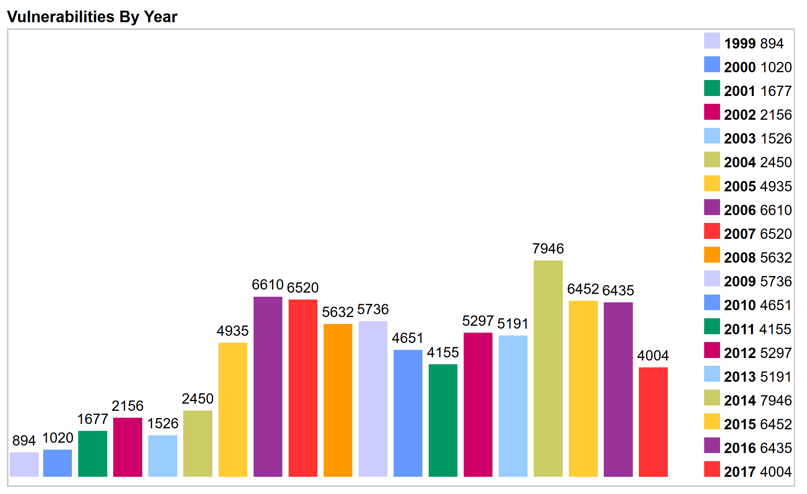
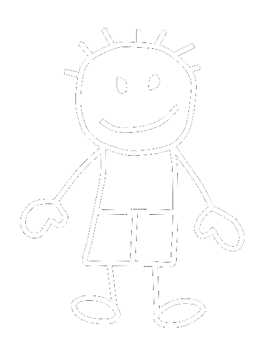
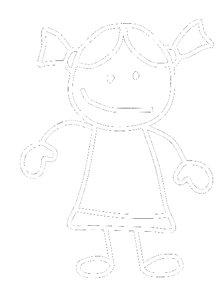
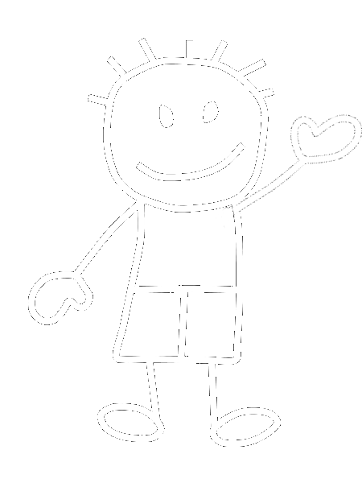
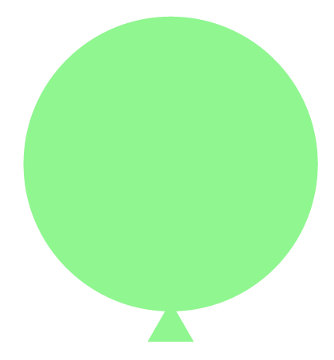
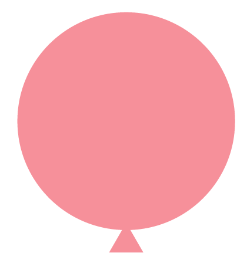
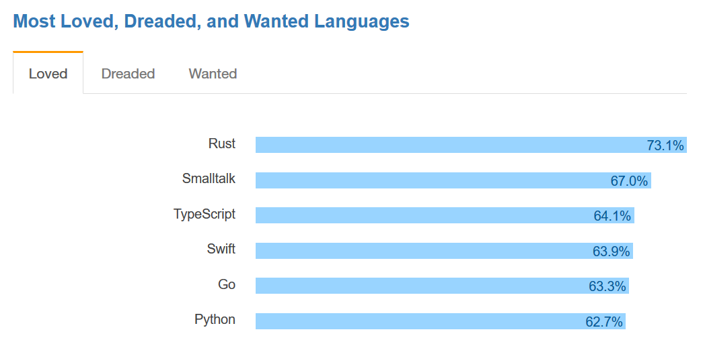

The state of being protected from various software bugs
and security vulnerabilities when dealing with memory
access, such as buffer overflows and dangling pointers.
— Wikipedia
Memory safety errors
Buffer overflow
Stack overflow
Use after free
Double free
Data races
Segmentation fault
Why keep using C/C++?
Inertia
Costly to rewrite
Portability
Let's
be honesthonest,
if you need segfault protection, you're a bad programmer.
— Anonymous good programmer on the internet
A real-world example
OpenSSL
Heartbleed in detail
Missing bounds check
Dormant for two years
Private keys leaked
CVE-2015-7547
glibc: getaddrinfo stack-based buffer overflow
Multiple stack-based buffer overflows

The Creation of Rust
2009 → present
10,000,000 LOC
12,000,000 LOC
133 CVEs in 2016
203 CVEs in 2016
All 34 sec-critical bugs filed against Web Audio so far
are either buffer overflows or use-after-free.
— Robert O'Callahan, Mozilla
Rust's original design / requirements
Memory safety
Thread-local, garbage-collected heaps
Green-threaded concurrency (ala Go)
Memory safety
Thread-local, garbage-collected heaps
Green-threaded concurrency (ala Go)
Rust's actual design / requirements
Memory safety
No GC or runtime at all
Traditional OS threads and concurrency
Rust's key design problem
How can I maintain memory safety in a concurrent program
without a global GC?
Thread A
h e a p
s t a c k
Thread B
h e a p
s t a c k
Thread A
h e a p
s t a c k
Thread B
h e a p
s t a c k
The Rust insight
Rust is Cyclone + Singularity
Ownership and borrowing
In Rust, every value has a single, statically-known,
owning path in the code, at any time.
Pointers to values have limited duration, known as a
"lifetime", that is also statically tracked.
All pointers to all values are known statically.
Ownership transfer (move / by-value)


OK, give my balloon back
Borrow a shared reference (&)


Borrow a mutable reference (&mut)

Ownership transfer (move / by-value)
fn main() {
let b = Balloon::new();
examine_balloon(b);
// accessing b here is a compilation error
println!("still have a balloon? {}", b);
}
fn examine_balloon(b: Balloon) {
println!("this balloon looks like {}", b);
// b is destroyed when the function exits
}
Borrow a shared reference (&)
fn main() {
let b = Balloon::new();
examine_balloon(&b);
println!("still have my balloon! {}", b);
// b is destroyed when the function exits
}
fn examine_balloon(b: &Balloon) {
println!("this balloon looks like {}", b);
}
Borrow a mutable reference (&mut)
fn main() {
let mut b = Balloon::new();
examine_balloon(&mut b);
println!("still have my balloon! {}", b);
// b is destroyed when the function exits
}
fn examine_balloon(b: &mut Balloon) {
println!("this balloon looks like {}", b);
}
Ownership and borrowing operations
Move an owned value (T)
Borrow a shared reference (&T)
Borrow a mutable reference (&mut T)
Rust Today
right now!
Best-in-class performance
ripgrep - 8x faster than grep
webrender - hundreds of fps
Stability as a deliverable
Stable since 2015
16 point releases
Growing library ecosystem
9k crates
50k versions
150M downloads
Rust's Community
1967 contributors to rust-lang/rust
RustConf, RustFest, Rust Belt Rust
StackOverflow 2017 Survey results

RedMonk Language Rankings
By our metrics, Rust went from the 46th most popular language on
GitHub to the 18th... no other language grew faster.